While performing descriptive analysis of numeric variables, it is essential to look at measure of central tendency and measure of dispersion. The measure of central tendency along with measure of dispersion parameters is fundamental in statistics and data analysis. They help us describe data distributions, assess data quality, detect outliers, and make informed decisions about data analysis techniques. By understanding both, we can gain a comprehensive view of your dataset’s characteristics, enabling you to draw meaningful insights and perform robust statistical analyses.
Measure of Central Tendency
It is the summary measure that attempts to describe the whole dataset with the single value that represents the middle or center of its distribution. The characteristics required for the ideal measure of central tendency are as follows:
It should be simple, comprehensive to calculate and understand
It should be based on all observations
It should be least affected by extreme values or outliers
It should be least affected by fluctation of sampling
It should be suitable for comparision between groups
There are three measures of central tendency:
Mean
Median
Mode
Mean
There are two different types of mean - a) arithmetic mean and b) Geometric mean
Arithmetic mean
It is the mathematical average value of the set of data. It is calculated by summing up the observations, divided by number of observations. It represents the arithmetic center of the data and is sensitive to extreme values. Its characteristics are as follows:
It is the most popular and commonly used measure of central tendency.
Its value is affected by extreme values or outliers.
It can be used to compare between groups as it’s a single value
Formula
The formula for the arithmetic mean of a set of $ n $ numbers \(( x_1, x_2, \dots...., x_n )\) is given by:
\[mean = \frac{x_1 + x_2 + \dots + x_n}{n}
\]
where,
\(mean\) is the arithmetic mean
\(n\) is the total number of observations
\(x_i\) represents each individual observation in the dataset
Geometric mean
The geometric mean of n numbers of data points is obtained by multiplying all the data points and taking the nth root of them. To calculate geometric mean, observations shoul be non-zero and non-negative. Geometric mean is not affected extreme values. It is very difficult to understand and calculate. It is used to describe data with extreme skewness to the right
Formula
The formula for the geometric mean of a set of \(n\) positive numbers \((x_1, x_2, \dots, x_n)\) is given by:
\(x_i\) represents each individual observation in the dataset
Harmonic mean
The harmonic mean is another measure of central tendency that is useful when dealing with rates or ratios. It is the reciprocal of the arithmetic mean of the reciprocal of the set of non-zero data points.
Formula
The formula to calculate harmonic mean for grouped and ungrouped mean are as follows:
Ungrouped Data
The formula for the harmonic mean of a set of \(n\) numbers \((x_1, x_2, \dots, x_n)\) is given by:
\(x_i\) represents each individual observation in the dataset
Grouped Data
For grouped data with frequencies \(( f_1, f_2, \dots, f_k )\) and corresponding values \(( x_1, x_2, \dots, x_k )\):
\[
HM = \frac{\sum f_i}{\sum \frac{f_i}{x_i}}
\]
Where:
\(HM\) the harmonic mean
\(f_i\) is the frequency of the \(i^{th}\) value
\(x_i\) is the value of the \(i^{th}\) observation
Median
It is the middle most observation in data if data is arranged in ascending or descending order. It is simple to calculate but it is not as popular as mean. Its characteristics are:
It’s robust to outliers, making it a better choice when data is skewed or has extreme values.
It can be used to compare between groups as its a single value
Mode
It is the most frequently occurring value in the set of observations. There are chances of having multiple modes and no mode. Some characteistics of mode are as follows:
It can’t be used to compare between groups as it can have multiple possible values or no value
It is not popular as mean and median.
Measure of Dispersion
The values of variables varies with person, place and time. The height or weight of person differs between person. This variation is a biological variability. Measure of dispersion is the measure of how spread out of values in the dataset representing variability. It is also known as measure of variation. Different measures of dispersion are as follows:
Range
Coefficient of range
Standard deviation
Variance
Coefficient of variance
Mean deviation from mean, median and mode
Quartile deviation and interquartile range
Percentile
Range
It is the basic form of measure of dispersion and defined as the difference between largest and smallest observation. If X and Y are the smallest and largest observation in the dataset respectively, the range,
\(R =Y-X\)where Y is highest value and X is lowest value
Example: For a data of BMI of 6 individuals: $17.1, 18.3, 19.3, 24.2, 21.2, 27.8 $
\(Range (R) = 27.8-17.1 = 10.7\)
Coefficient of Range
It is the ralative measure of corresponding to range. It can be used to compared variation between two different distributions. The formula to calculate coefficient of range is as follows:
\[
CoR= \frac{Y-X}{Y+X}
\]where Y is highest value and X is lowest value
The coefficient of range for above example is as follows:
\(CoR =\frac{10.7}{44.9} = 0.24\)
where\(Y-X= 27.8-17.1\) and\(Y+X= 27.8+17.1\)
Standard Deviation
The standard deviation is the square root of the variance. It represents the average deviation of data points from the mean. A low standard deviation indicates that data points are close to the mean, while a high standard deviation suggests greater dispersion. The formula to calculate standar deviation is as follows:
Some pros and cons of standard deviation are as follows:
a. It resolves the problem of ignoring the sign on mean deviation by squaring the deviations.
b. It is based on all observations
c. It is useful in calculationg standard error. The formula to calculate standard error, \(SE=\frac{SD}{\sqrt{n}}\)
d. It gives greater weights to extreme values.
Variance
Variance measures the average of the squared differences from the mean. It quantifies how much data points deviate from the mean and provides valuable information about data dispersion.
The formula to calculate variance is as follows:
\[
Var = \frac{1}{N} \sum_{i=1}^{N} (x_i - \mu)^2
\]
Where:
\(Var\): Variance
\(x_i\): Individual data points
\(\mu\): Mean of the data
\(N\): Number of data points
Mean Deviation
It is the average of the deviations of values from the measure of central tendency ignoring the sign of these deviations.
Quartiles deviation and interquartile range
Quartiles are the three points in the dataset that divide it into four groups each containing 25% of the total data points. If Q1, Q2, Q3 are the three quartiles then interquartile range (IQR) is Q3-Q1. Q2 is the median. Some characteristics of quartiles are as follows:
Coefficient of Variance
It is the ratio of standard deviation with respect to mean expressed as percentage. Lower the COV, lower is the variability in the dataset. Some characteristics of Coefficient of variance are as follows:
It is useful in comparing variability between two distributions
It is expressed in percent
It can be used to compared variation between two data in different units
The formula to calculate coefficient of variance is as follows:
\[
COV = \frac{SD}{Mean}*100
\]
Example: If the mean height of students in a class is 172.4 cm and standard deviation is 10.1cm. The COV is 10.1/172.4*100 = 5.86%. It means the standard deviation is 5.86% of its mean value.
Descriptive statistics of categorical variables
The categorical variables can be described using frequency, and percentage.
Practical session
Lets practically perform descriptive analysis of numeric and categorical variables. The important resources for this chapter is the data set which can be downloaded from the link here.
You can get descriptive overview of the dataset using summary() function
data <- haven::read_dta("Datasets/dt.dta")summary(data)
#> mcaseid Cluster Household Line_number
#> Length:12353 Min. : 1.0 Min. : 1.0 Min. : 1.000
#> Class :character 1st Qu.:115.0 1st Qu.: 31.0 1st Qu.: 1.000
#> Mode :character Median :237.0 Median : 67.0 Median : 2.000
#> Mean :237.8 Mean : 85.3 Mean : 2.641
#> 3rd Qu.:359.0 3rd Qu.:125.0 3rd Qu.: 3.000
#> Max. :476.0 Max. :505.0 Max. :24.000
#>
#> Sampling_weight Age Sex Ethnicity
#> Min. :0.1606 Min. :15.00 Min. :0.0000 Length:12353
#> 1st Qu.:0.5619 1st Qu.:21.00 1st Qu.:0.0000 Class :character
#> Median :0.8889 Median :29.00 Median :0.0000 Mode :character
#> Mean :0.9975 Mean :29.85 Mean :0.3977
#> 3rd Qu.:1.3270 3rd Qu.:38.00 3rd Qu.:1.0000
#> Max. :3.7038 Max. :49.00 Max. :1.0000
#>
#> Religion marital_status Education occupation
#> Length:12353 Min. :1.000 Min. :0.000 Length:12353
#> Class :character 1st Qu.:1.000 1st Qu.:1.000 Class :character
#> Mode :character Median :2.000 Median :1.000 Mode :character
#> Mean :1.759 Mean :1.298
#> 3rd Qu.:2.000 3rd Qu.:2.000
#> Max. :3.000 Max. :3.000
#>
#> Location Ecologicalbelt Province District
#> Min. :1.000 Length:12353 Length:12353 Length:12353
#> 1st Qu.:1.000 Class :character Class :character Class :character
#> Median :2.000 Mode :character Mode :character Mode :character
#> Mean :1.545
#> 3rd Qu.:2.000
#> Max. :2.000
#>
#> Wealth Health_insurance current_alcohol current_smoke
#> Length:12353 Min. :0.0000 Length:12353 Length:12353
#> Class :character 1st Qu.:0.0000 Class :character Class :character
#> Mode :character Median :0.0000 Mode :character Mode :character
#> Mean :0.1172
#> 3rd Qu.:0.0000
#> Max. :1.0000
#>
#> Self_reported_health disability Food_insecurity PHQ9_Score
#> Length:12353 Min. :0.0000 Length:12353 Min. : 0.000
#> Class :character 1st Qu.:0.0000 Class :character 1st Qu.: 0.000
#> Mode :character Median :0.0000 Mode :character Median : 1.000
#> Mean :0.2272 Mean : 2.279
#> 3rd Qu.:0.0000 3rd Qu.: 3.000
#> Max. :2.0000 Max. :24.000
#> NA's :5
#> GAD_Score
#> Min. : 0.000
#> 1st Qu.: 0.000
#> Median : 2.000
#> Mean : 2.942
#> 3rd Qu.: 4.000
#> Max. :21.000
#>
Notice that the summary are different for different data types.
Descriptive table for single variable
Frequency
We can use table() function to generate frequency table for categorical variables. Within the function table, you can have additional arguments like useNA which is used when you want to include NA in the table. The useNA argument takes three inputs "no", "ifany" and "always". The default is "no".
table(data$Sex)
#>
#> 0 1
#> 7440 4913
table(data$Sex, useNA="no")
#>
#> 0 1
#> 7440 4913
table(data$Sex, useNA="ifany") # Displays NA column in table if there are any missings within variable
#>
#> 0 1
#> 7440 4913
table(data$Sex, useNA="always") # Always displays NA column in the table even if missings don't exist
#>
#> 0 1 <NA>
#> 7440 4913 0
Proportion
To calculate the proportions, you can use prop.table() function which determines the proportion of each categories within the variable. The prop.table() function is always used with table() function for summarized table, otherwise the prop.table() command generates proportion for each observation of the variable.
sex <-table(data$Sex) # Generate table and save to a object here "sex"prop.table(sex) # This will generate proportion
#>
#> 0 1
#> 0.6022828 0.3977172
# To calculate the percentageprop.table(sex)*100
#>
#> 0 1
#> 60.22828 39.77172
# Round off the percentageround(prop.table(sex)*100, 1) # Round function has 2 arguments, one is the value to round off (here: proportion table) and second is the number of digits after decimal for the value.
#>
#> 0 1
#> 60.2 39.8
# You can do this using piping (|>) "tidyverse" package is to be loaded before using piping100*table(data$Sex) |>prop.table() |>round(3)
#>
#> 0 1
#> 60.2 39.8
Bar chart and Pie chart
Pie chart: For pie chart, you can use pie() function. To create pie chart, use table that you have generated earlier.
Usage: pie(x, labels = names(x), col = NULL, main = NULL, ...)
x: A numeric vector containing non-negative values, representing the sizes of the slices in the pie chart.
labels: (Optional) A vector of labels for the slices. By default, it uses the names of x.
col: (Optional) A vector of colors for the slices. If not specified, a default set of colors is used.
main: (Optional) The title for the pie chart.
...: Additional graphical parameters (e.g., cex for character expansion, border for slice borders).
# Default pie chartpie(sex)
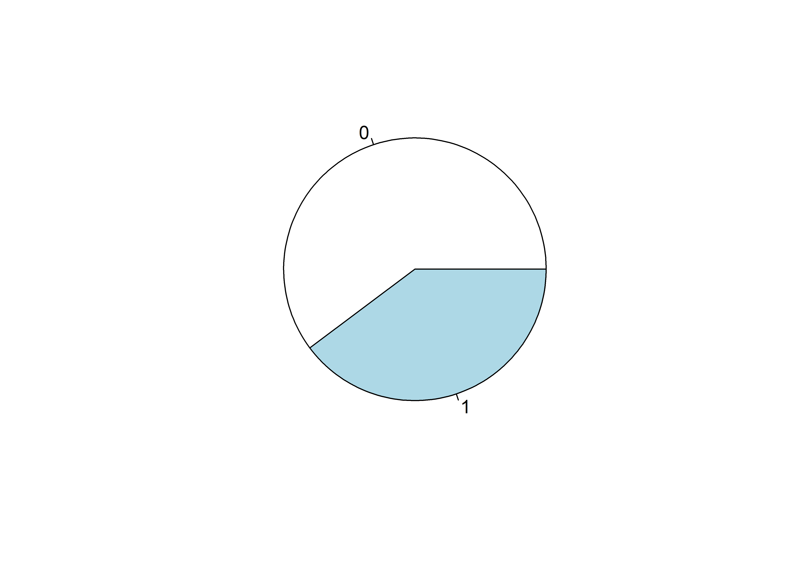
# Add title to the pie chartpie(sex,main="Sex-wise distribution of population")
# Change labels from Male and Female to M and F respectivelypie(sex,main="Sex-wise distribution of population",labels =c("F", "M"))
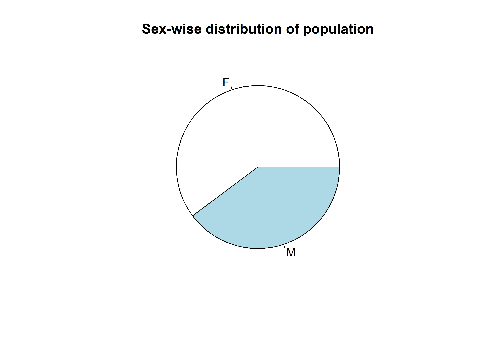
# Change color of slices pie(sex,main="Sex-wise distribution of population", labels =c("Female", "Male"),col =c("pink", "lightblue"))
# Change size of labels (using cex) and change border colorpie(sex,main="Sex-wise distribution of population",labels =c("Female", "Male"),col =c("pink", "lightblue"),cex=2,# Changes the font size of the labelsborder ="white")
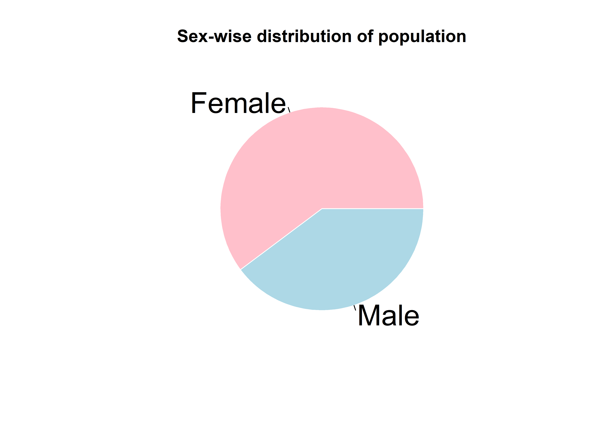
Bar chart: For bar chart, you can use barplot() function. To create bar chart, lets use the same table that we generated earlier.
Usage: barplot(height, names.arg, beside = TRUE, col = NULL, main = NULL, xlab = NULL, ylab = NULL)
height: A numeric vector or matrix containing the heights of the bars.
names.arg: (Optional) A vector of names to be plotted below each bar.
beside: (Optional) Logical. If TRUE, the bars will be plotted beside each other; if FALSE, bars will be plotted as stacked bars.
col: (Optional) A vector of colors for the bars.
main, xlab, ylab: (Optional) Titles for the main plot and the x and y-axes.
# Default barplotbarplot(sex)
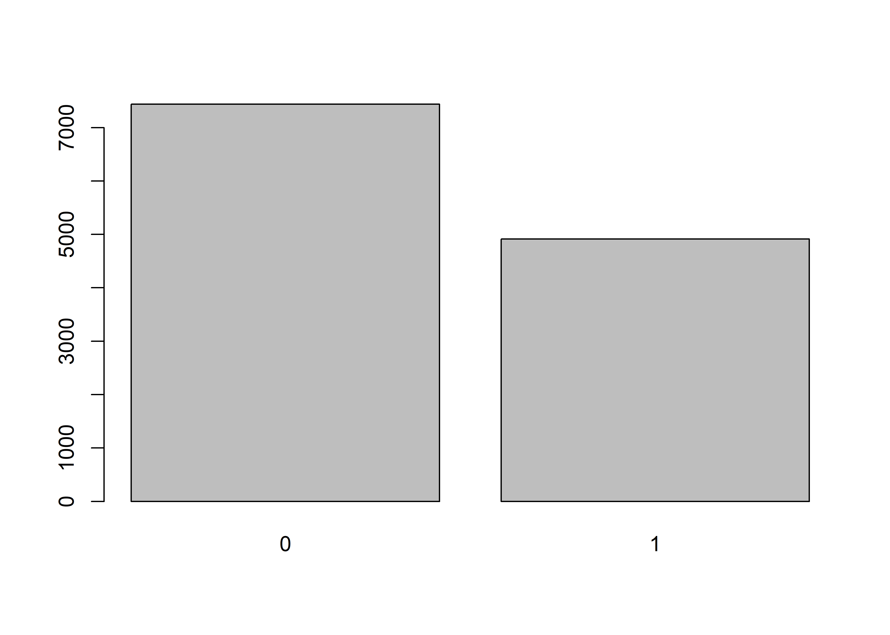
# Add title to bar chartbarplot(sex,main="Sex-wise distribution of population")
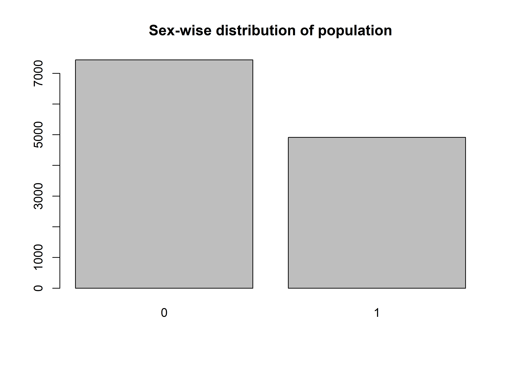
# Change x-axis and y-axis labelsbarplot(sex,main="Sex-wise distribution of population",ylab="Frequency",xlab="Gender", beside = F)
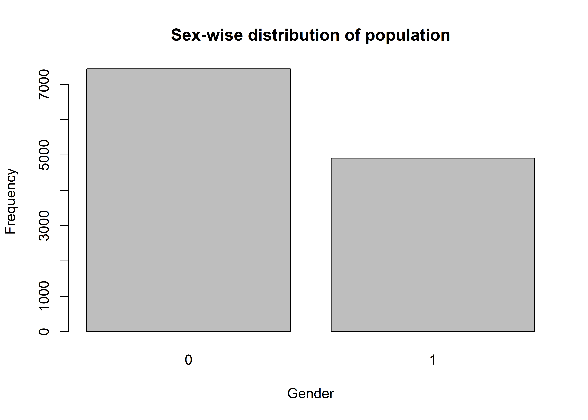
# Change labels of the sexbarplot(sex,main="Sex-wise distribution of sex",names.arg =row.names(sex), # you can manually change it as c("Female", "Male")ylab="Frequency",xlab="Gender", beside = F)
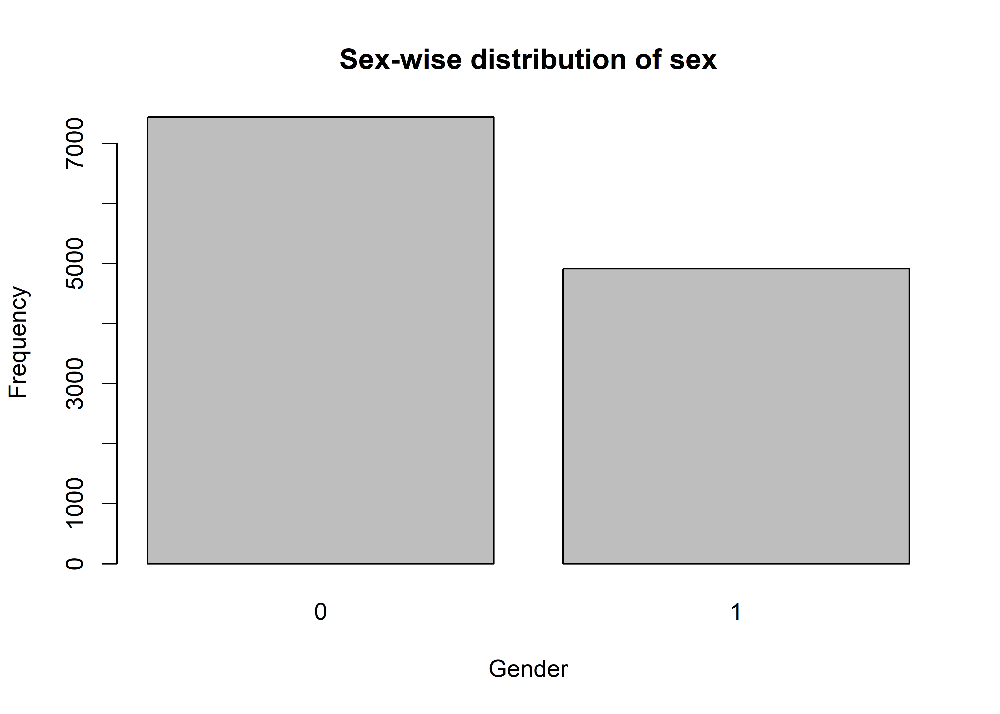
# Change color of bar barplot(sex,main="Sex-wise distribution of sex", col =c("pink", "lightblue"),las =1)
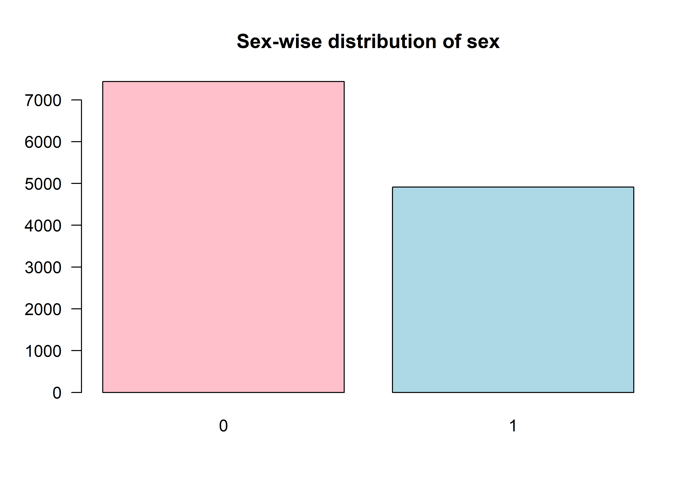
Descriptive table for single variable (Cross-tabulation)
Frequency
Same as the frequency for single categorical variable, we can use the function table() but with two variables as arguments inside the table() function to create a cross-tabulation.
table(data$Sex, data$Ethnicity) # Here first variable will be in row and second will be in column
Now try the cross-tabulation for other variables and see how the results change.
Proportions
Same as proportion for single categorical variable, you can use prop.table() function to determine proportion for cross-tabulation. But in cross-tabulation, you will need additional argument if you wish to calculate row proportion or column proportion or overall proportion.
default: for relative percent/proportion for entire table
margin = 1: for row percent/proportion
margin = 2: for column percent/proportion
ctable.sex.eth <-table(data$Sex, data$Ethnicity) # Generate table and save to a object here "ctable.sex.eth"prop.table(ctable.sex.eth) # This will generate overall proportion
# You can do this using piping (|>) "tidyverse" package is to be loaded before using piping# For row percent100*table(data$Sex, data$Ethnicity)|>prop.table(1) |>round(3)
prop.table() uses as first argument a cross table as produced by table(). Only if we use it with the pipe |> we can use the unnamed value for the margin argument as presented above.
Bar-chart
# Default is the stacked plotbarplot(ctable.sex.eth)
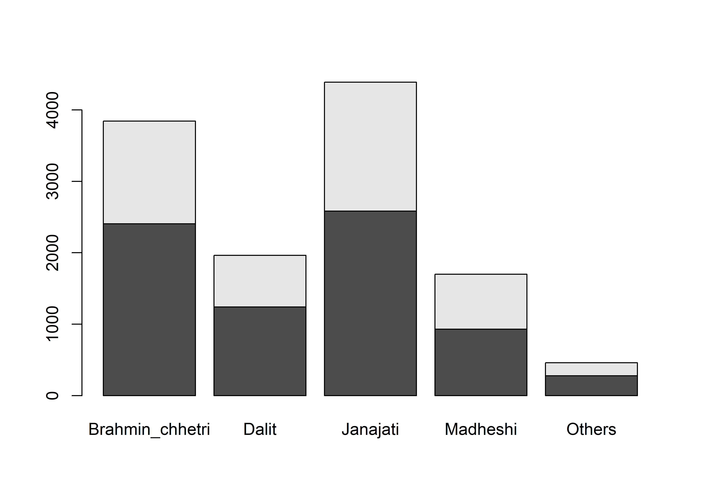
# Let's give 'Sex' variable a separate barbarplot(ctable.sex.eth, beside =TRUE)
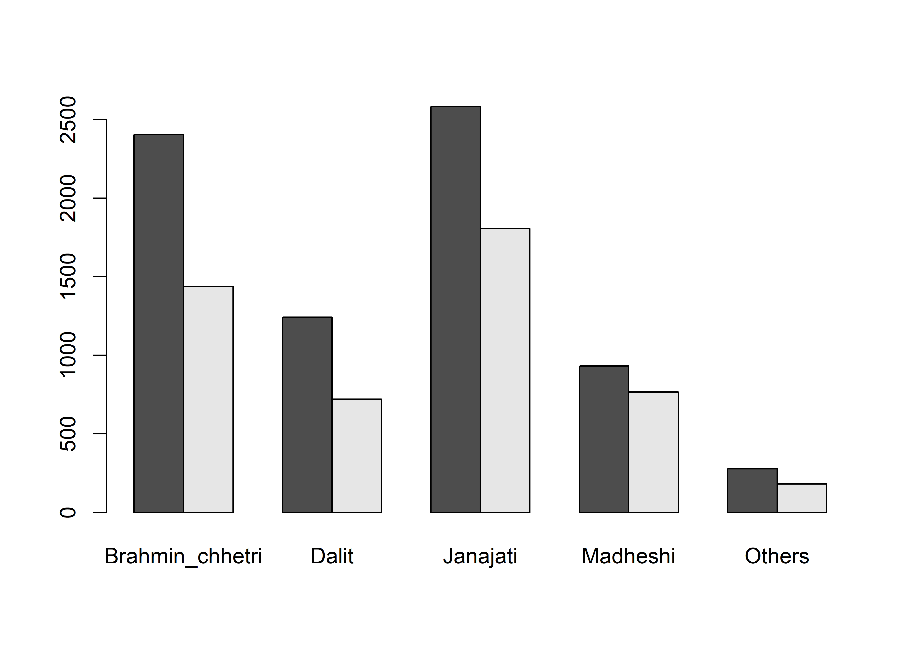
# Add title to the bar chartbarplot(ctable.sex.eth,main="Sex and ethnicity-wise distribution of population",beside =TRUE)
# Change x-axis and y-axis labelsbarplot(ctable.sex.eth,main="Sex and ethnicity-wise distribution of population",ylab="Frequency",xlab="Ethnicity", beside =TRUE)
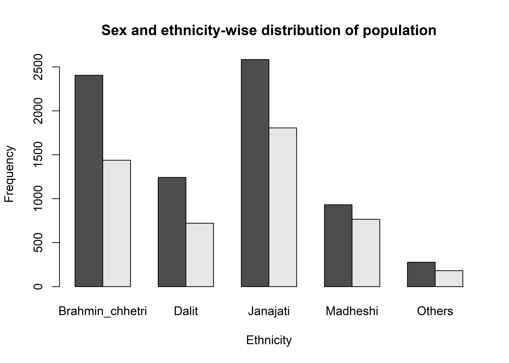
# Change the bar color and add a legend barplot(ctable.sex.eth,main="Sex and ethnicity-wise distribution of population",ylab="Frequency",xlab="Ethnicity",beside =TRUE,col =c("skyblue", "orange"))legend("topright", legend =c("Female","Male"), fill =c("skyblue", "orange"))
# Flip the bar plotbarplot(ctable.sex.eth,main="Sex and ethnicity-wise distribution of population",xlab="Frequency",beside =TRUE,col =c("skyblue", "orange"),horiz =TRUE)legend("topright", legend =c("Female","Male"), fill =c("skyblue", "orange"))
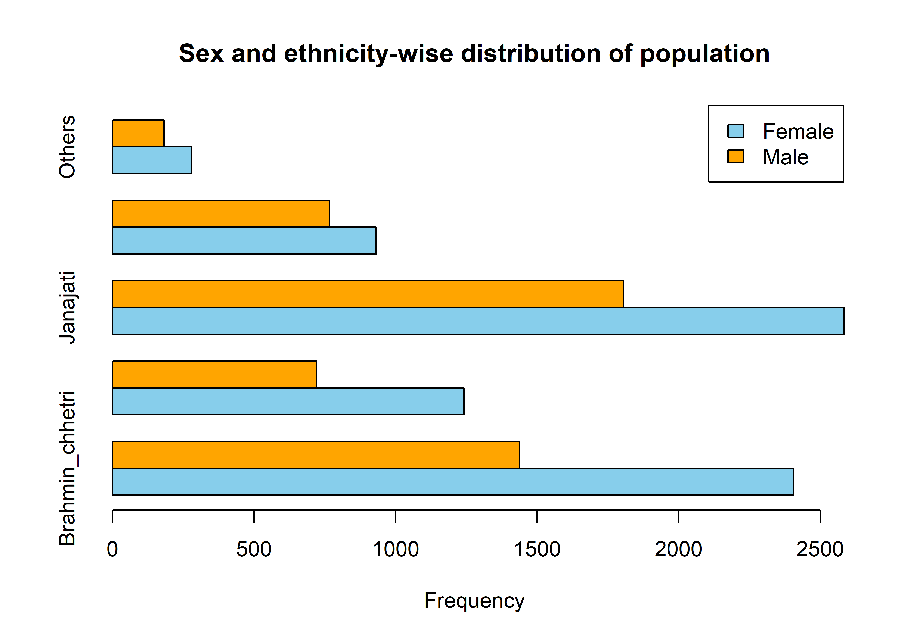
# Straighten the text labelbarplot(ctable.sex.eth,main="Sex and ethnicity-wise distribution of population",xlab="Frequency",beside =TRUE,col =c("skyblue", "orange"),horiz =TRUE,las=1)legend("topright", legend =c("Female","Male"), fill =c("skyblue", "orange"))
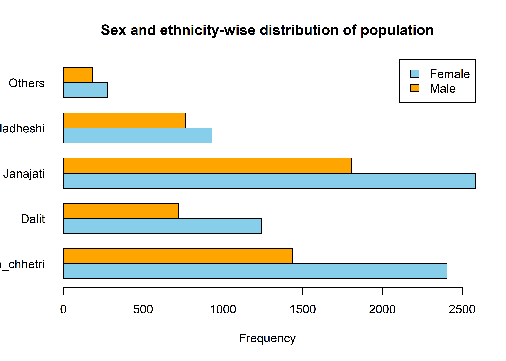
# Add value labels to the columntext(x =barplot(ctable.sex.eth,main="Sex and ethnicity-wise distribution of population",ylab="Frequency",xlab="Ethnicity",beside =TRUE,col =c("skyblue", "orange")) +0, y = ctable.sex.eth +1, labels = ctable.sex.eth, pos =3, col ="red", cex =0.8)
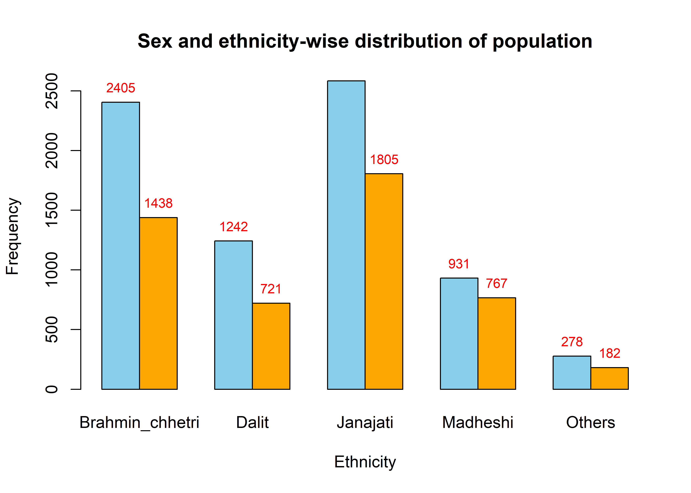
# Change the xlimit and ylimit text(x =barplot(ctable.sex.eth,main="Sex and ethnicity-wise distribution of population",ylab="Frequency",xlab="Ethnicity",beside =TRUE,col =c("skyblue", "orange"), ylim=c(0,3000)) +0, y = ctable.sex.eth +1, labels = ctable.sex.eth, pos =3, col ="red", cex =0.8)legend("topright", legend =c("Female","Male"), fill =c("skyblue", "orange"))
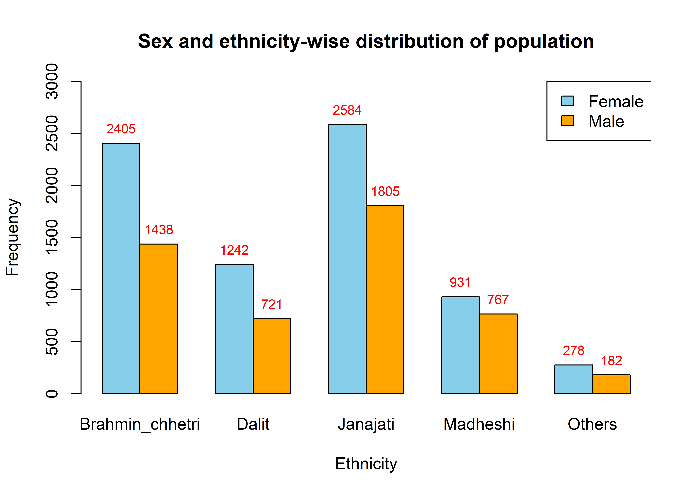
Descriptive statistics for numerical variables
The basic functions for the descriptive statistics of numerical variables and their use are as follows:
Functions
Use
mean (x, na.rm=TRUE)
Arithmetic mean
sd(x, na.rm=TRUE)
Standard deviation
var(x, na.rm=TRUE)
Variance
median (x, na.rm=T)
Median
quantile(x, probs, type)
Quantiles of x probs: with probabilities
min (x, na.rm=T)
Minimum value
max(x, na.rm=T)
Maximum value
range(x, na.rm=T)
Minimum and maximum value
Descriptives of single variables
Measure of central tendency and dispersion
The mean, median, mode, quantile, standard deviations, variance minimum, maximum, range of the data can be calculated using several base functions like mean(), median(), sd(), var(), max(), min(), range(), etc.
mode() function does not calculate mode of the numeric variables instead it is the function to display the class of the object (i.e. numeric, integer, list, factor etc)
Histogram
We can use histogram or boxplot to visualize numeric variables.
Histogram: Histogram is created using hist() function.
hist(x, main = NULL, xlab = NULL, ylab = NULL, col = NULL, breaks = "Sturges", …)
x: A numeric vector containing the data values.
main, xlab, ylab: (Optional) Titles for the main plot and the x and y-axes.
col: (Optional) Color for the bars.
breaks: (Optional) Method for determining the number of breaks in the histogram.
...: Additional graphical parameters.
#| fig-cap: "Defalt histogram"hist(data$Age)#| fig-cap: "Histogram with main and axis tiltle, and color change" hist(data$Age,main ="Distribution of Age",ylab ="Frequency",xlab="Age",col="skyblue")#| fig-cap: "Add normal curve to the histogram"# X-axis gridsequence <-seq(min(data$Age), max(data$Age), 1) # Generate sequence between min and max value, each unit differeng by 1 unit# Normal curvefun <-dnorm(sequence, mean =mean(data$Age), sd =sd(data$Age))# Note: dnorm function calculates how steep the cumulative normal distribution is at a given value (y).hist(data$Age,main ="Distribution of Age",ylab ="Frequency",xlab="Age",col="skyblue", probability = T)lines(sequence, fun, col="blue", lwd=2) # lwd changed the thickness of the normal curve
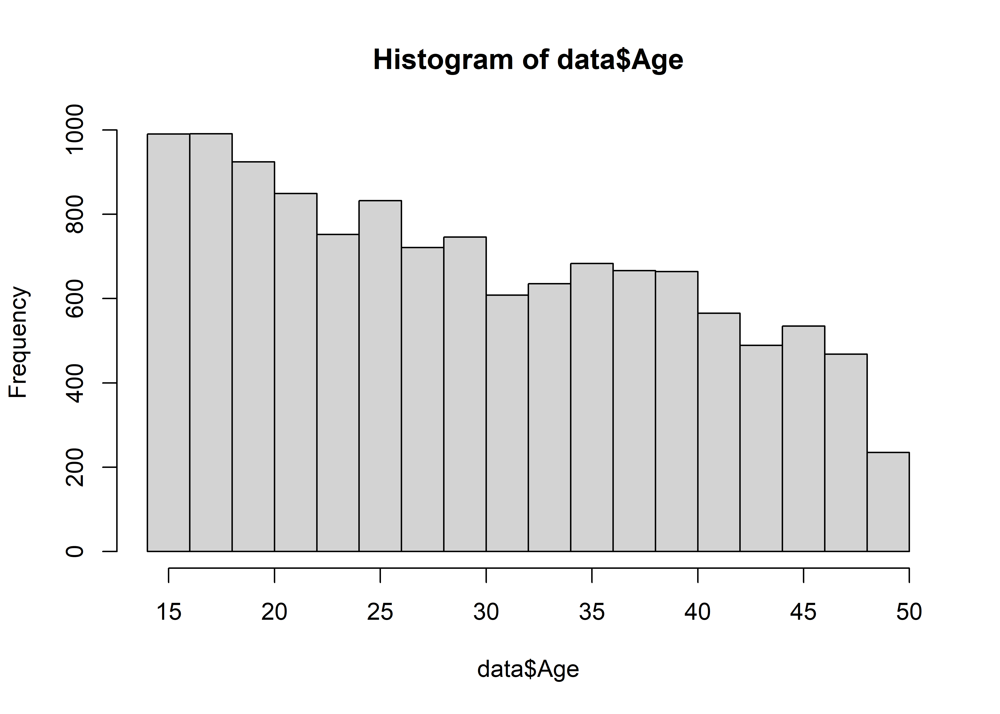
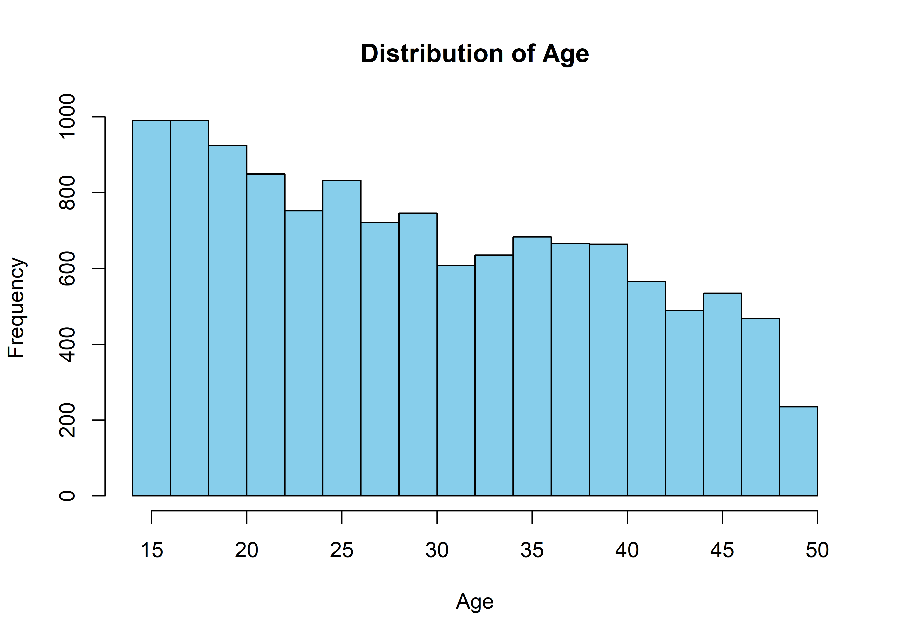
Boxplot
Box plots (box-and-whisker plots) are graphical representations of the distribution of a dataset. They display the median, quartiles, and potential outliers.
notch: (Optional) Logical. If TRUE, a notch is drawn around the median.
varwidth: (Optional) Logical. If TRUE, box widths are proportional to the square root of the sample size.
col: (Optional) Color for the boxes.
names: (Optional) Labels for the boxes.
...: Additional graphical parameters.
boxplot(data$Age)# Add mean point and change title of the text in the box plotboxplot(data$Age, main="Box plot for age", col="skyblue")points(x =1, y =mean(data$Age), col ="red", pch =16)
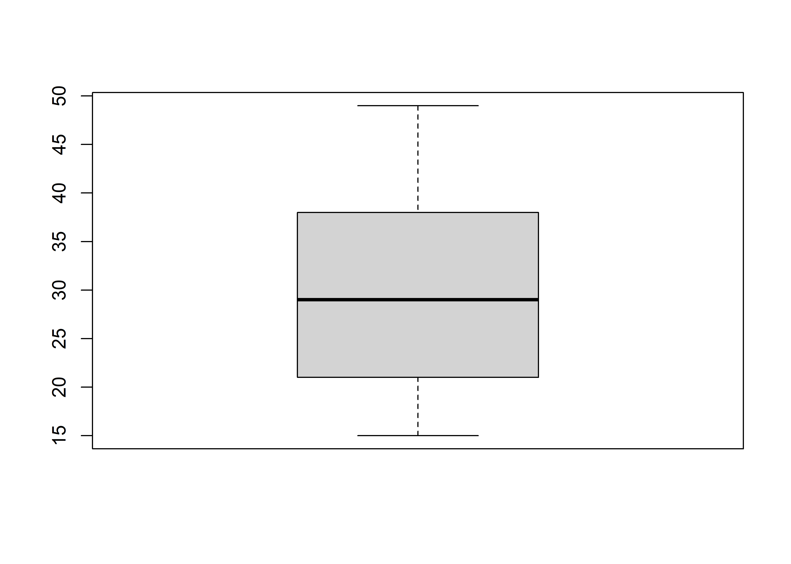
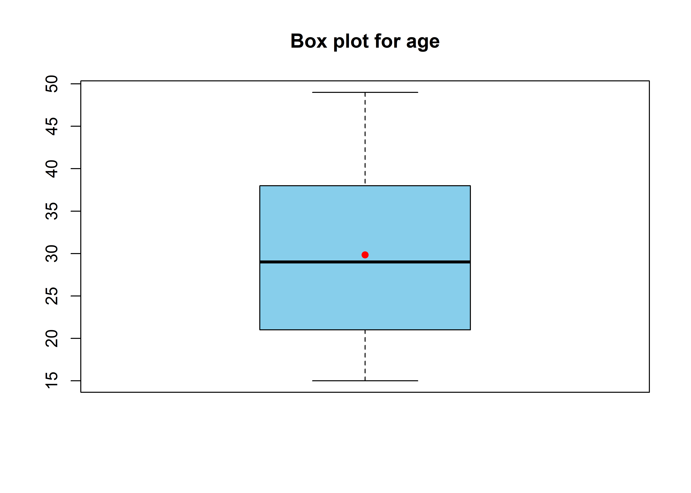
Descriptive statistics for numerical variables by categorical variables
It can be done by using different approaches
Using base function (tapply and aggregate)
tapply is used to apply a function over subsets of a vector. It is particularly useful when you have a vector and want to apply a function to subsets of that vector based on some factor variable.
Usage:tapply(X, INDEX, FUN)
where X: Vector of data values;
INDEX: Factor or a list of factors indicating how to form subsets
FUN: Function to apply to each subset.
# Descriptive statistics of a numerical variable by one categorical variabletapply(data$Age, data$Sex, mean)
# This also workstapply(data$Age, data$Sex, quantile, probs=c(0.25, 0.75)) # Note: here the arguments within quantile is kept outside quantile function but inside tapply function
boxplot(data$Age~data$Sex, main="Distribition of age by sex", col=c("lightpink", "lightblue"))boxplot(data$Age~data$Ethnicity,main="Distribition of age by ethnicity",col=c("grey", "skyblue", "lightpink", "lightgreen","lightyellow"))
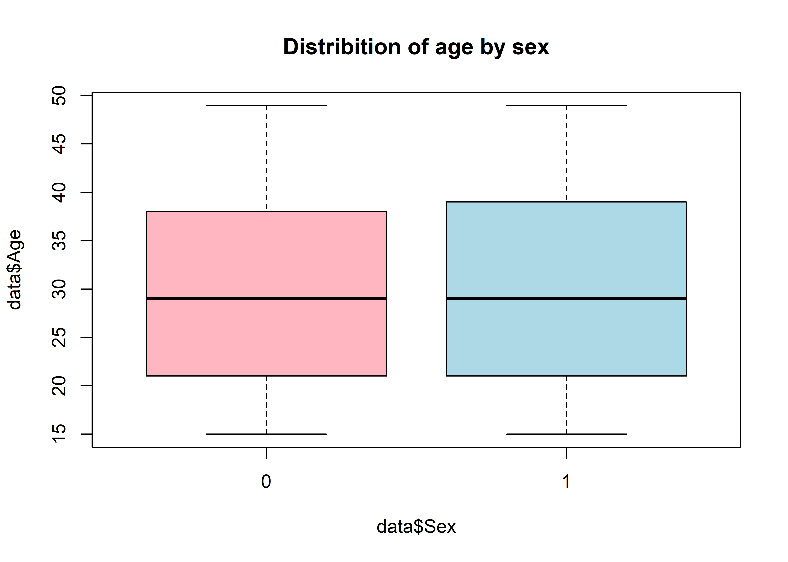
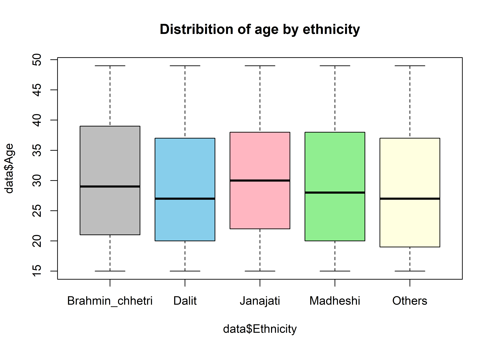
Skewness and Kurtosis
Skewness: Skewness measures the asymmetry of a distribution. It indicates whether the data is skewed to the left (negatively skewed) or to the right (positively skewed). A skewness value close to 0 suggest a roughly symmetric distribution. Negative skewness indicates a tail to the left while positive skewness indicates a tail to the right
Kurtosis: Kurtosis measures the “tailedness” of a distribution. It reflects how much data is in the tails and how sharp or flat the peak is. A kurtosis value around 0 is associated to normal distribution. Positive kurtosis indicates heavier tails while negative kurtosis indicates lighter tails.
We can calculate skewness and kurtosis using moments package. Lets calculate skewness and kurtosis in our dataset.
Function used: skewness () and kurtosis()
# install.packages("moments")library(moments)# skewnessskewness(data$Age) # Interpretation: slight right ward skew
#> [1] 0.245344
kurtosis(data$Age) # Interpretation: it is higher than 3 (this indicates heavier tails)
#> [1] 1.868973
Testing normality of numeric variables
Normality is an important assumption in many statistical tests, such as t-tests, ANOVA, linear regression, and parametric tests. Ensuring that data is normally distributed helps validate the results of these tests and ensures the reliability of statistical inferences. In the figure below, only middle one is normally distributed whereas other two are not.
Normality testing can be conducted using several methods:
Statistical test
Shapiro-Wilk test
Kolmogorov-Smirnov (KS) test
Graphical
Q-Q plot
Histogram
Shapiro-Wilk Test
The Shapiro-Wilk test is a widely used statistical test for normality. It evaluates the null hypothesis that a sample comes from a normally distributed population. It is particularly effective for small to moderate sample sizes (typically < 50).
The test statistic, W, compares the observed data to what would be expected under normality. A p-value < 0.05 often leads to rejecting the null hypothesis, indicating non-normality.
dt <-rnorm(1000)# Shapiro wilk test (works for sample <5000)shapiro.test(dt)
#>
#> Shapiro-Wilk normality test
#>
#> data: dt
#> W = 0.99786, p-value = 0.2294
Interpretation: The test statistic (W) is 0.99786, and the p-value is 0.7844. With a high p-value, there is no significant evidence to reject the null hypothesis, suggesting that the data is reasonably consistent with a normal distribution.
Kolmogorov-Smirnov (KS) test
The Kolmogorov-Smirnov test is a non-parametric test used to compare a sample distribution to a reference distribution (e.g., normal distribution). It measures the maximum distance between the empirical distribution function of the sample and the cumulative distribution function of the reference distribution. While it can be used for normality testing, it is less powerful than the Shapiro-Wilk test for this purpose, especially for small samples.
# KS testks.test(dt,"pnorm", exact = T)
#>
#> Exact one-sample Kolmogorov-Smirnov test
#>
#> data: dt
#> D = 0.03272, p-value = 0.2296
#> alternative hypothesis: two-sided
Interpretation: The test statistic (D) is 0.017067, and the p-value is 0.9982. With a high p-value, there is no significant evidence to reject the null hypothesis, indicating that the data does not significantly differ from the assumed distribution in a two-sided test.
Q-Q plot
A Q-Q plot is a graphical tool to assess whether a dataset follows a particular distribution, such as the normal distribution. It plots the quantiles of the sample data against the quantiles of the theoretical distribution. If the points fall approximately along a straight line, the data is likely normally distributed. Deviations from the line (e.g., curves or outliers) suggest departures from normality.
# QQ plotqqnorm(dt)
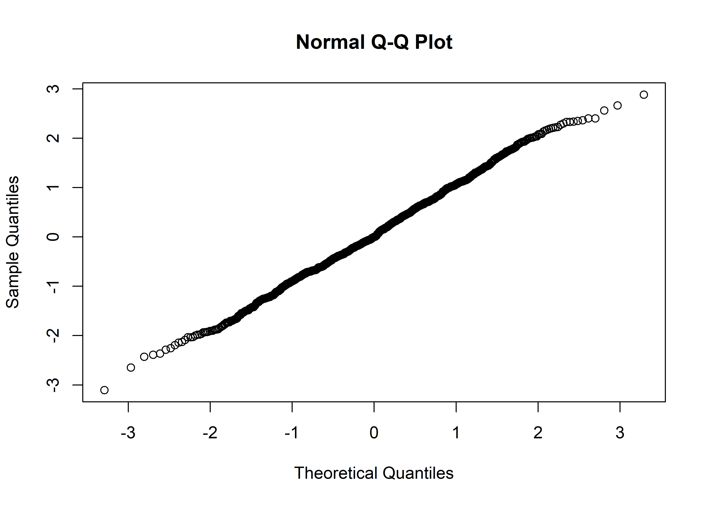
qqnorm(data$Age)
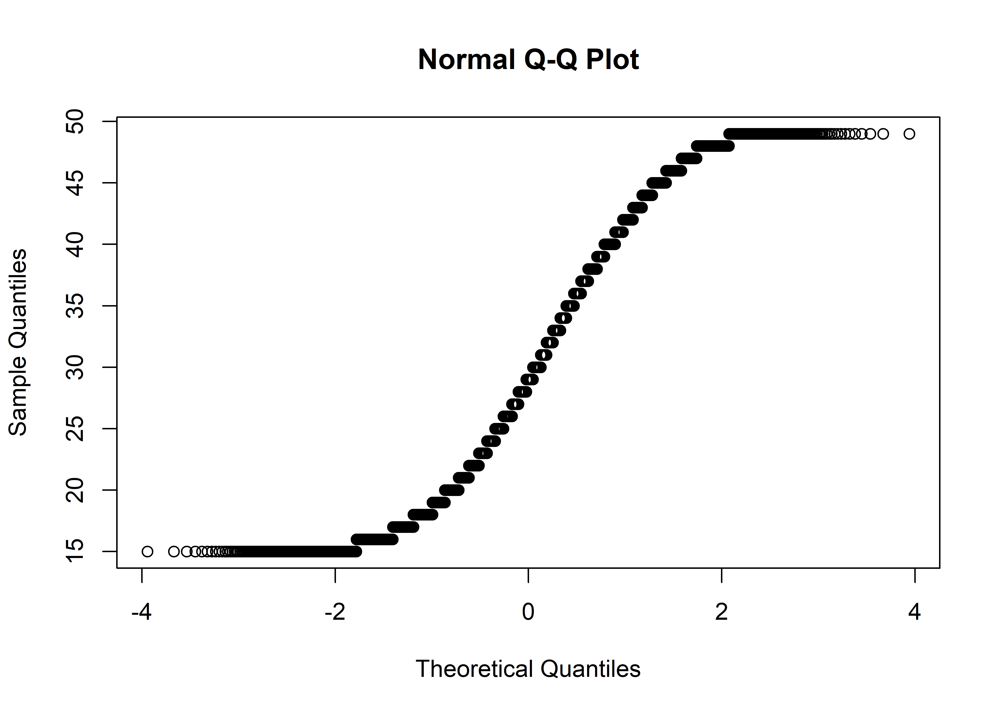
Interpretation: In the first chart, the points do not deviate significantly from the line, indicating that the data, dt, is normally distributed. However, in the second chart, the points deviate from the line, forming an S-shaped curve, which suggests that the data is not normally distributed.
Histogram
A histogram is a visual representation of the distribution of a dataset. It divides the data into bins and displays the frequency of observations in each bin.For normality testing, the shape of the histogram is compared to the bell-shaped curve of a normal distribution. Symmetry, peak at the mean, and tapering tails are indicators of normality. While useful for a quick visual check, histograms can be subjective and less reliable for small sample sizes.
# Histogramsequence <-seq(min(dt), max(dt), 0.2)fun <-dnorm(sequence, mean =mean(dt), sd =sd(dt))hist(dt,main ="data",ylab ="Frequency",xlab="dt",col="skyblue", probability = T)lines(sequence, fun, col="blue", lwd=2)
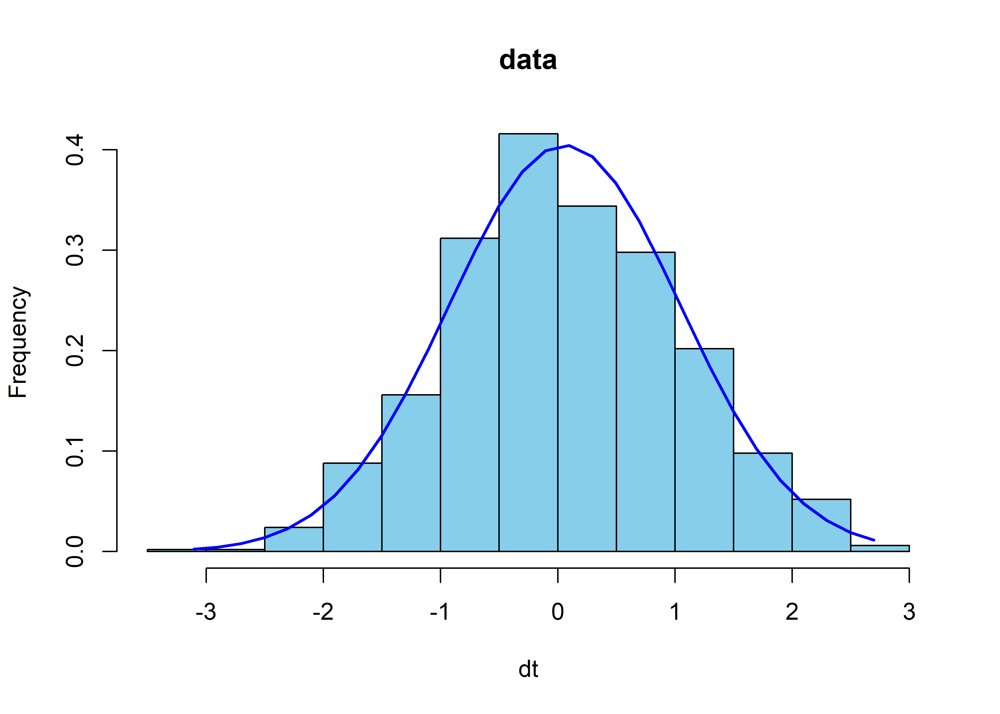
Interpretation: Since, the chart seems to be symmetric with peak at mean and tapering tails which indicates that the data is normally distributed.